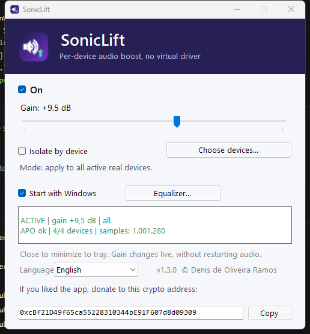

Hasta +30 dB, controlado
Lleva más lejos los altavoces flojos de portátil y Bluetooth, con un limitador que controla los picos en vez de recortar.
APO nativo de Windows · v1.3.0
SonicLift aumenta el volumen hasta +30 dB y ajusta el sonido dentro del dispositivo que Windows ya está usando. Sin tarjeta de sonido extra, sin dispositivo virtual que elegir y sin controlador en medio.
SonicLift es el nuevo nombre de SoundBlast. Los ajustes existentes se migran automáticamente. Saber más

Funciones
Un interruptor y un slider para el día a día. Un EQ de 10 bandas completo cuando quieras ir más allá.
Lleva más lejos los altavoces flojos de portátil y Bluetooth, con un limitador que controla los picos en vez de recortar.
Ajusta de 31 Hz a 16 kHz con seis presets: Flat, Music, Gaming, Bass, Voice y Movie. Guarda y comparte perfiles de EQ.
Tres sliders amigables para ajuste rápido: peso en graves, anchura estéreo y presencia en medios-altos.
Realza el EQ sin clipping agresivo. SonicLift compensa el preamp a medida que subes las bandas.
Windows sigue cambiando entre auriculares, Bluetooth, USB y HDMI. El efecto acompaña al dispositivo real activo.
Instancia única, inicia con Windows, se minimiza a la bandeja y sigue procesando en segundo plano.
Guarda tu ajuste en un archivo pequeño, llévalo a otro PC o compártelo con un amigo.
Inglés por defecto, con traducciones completas al portugués y al español en la app y el instalador.
Aplica la ganancia solo donde quieras, con una lista sin duplicados que agrupa perfiles Bluetooth del mismo dispositivo.
Cómo funciona
Sin tarjeta de sonido virtual, sin dispositivo extra que elegir y sin capa de controlador en medio.
En el primer inicio, SonicLift registra el APO y lo vincula al endpoint de salida mediante FxProperties de Windows.
Define ganancia, EQ, graves, surround y claridad. La interfaz publica los cambios en vivo por memoria compartida.
audiodg.exe ejecuta el efecto dentro del pipeline del dispositivo. Cambia de dispositivo y el sonido acompaña.
Comparar
Cómo se sitúa SonicLift junto a las herramientas de audio populares para Windows.
| SonicLift | FxSound | Equalizer APO | Boom 3D | SteelSeries Sonar | |
|---|---|---|---|---|---|
| APO nativo (sin dispositivo virtual) | Sí | Dispositivo virtual | Sí | Dispositivo virtual | Dispositivo virtual |
| Aumento de volumen | hasta +30 dB | Sí | preamp | Sí | Sí |
| Limitador | siempre activo | Sí | manual | Sí | Sí |
| Ecualizador | 10 bandas | 9 bandas | avanzado / VST | 31 bandas | 10 bandas |
| Presets | 6 incluidos | Sí | manual | Sí | Sí |
| Graves / Surround / Claridad | Sí | Solo graves | filtros | Sí | Sí |
| Control por app | por dispositivo | limitado | vía config | Sí | Sí |
| Idiomas | EN / PT / ES | EN | EN | EN (+ varía) | EN |
| Red / telemetría | Ninguna | open-source | open-source | varía | cuenta / varía |
| Precio | Gratis (personal) | Gratis | Gratis | Pago | Gratis (hardware) |
Comparación basada en las páginas públicas de los productos. Funciones y precios varían según versión, plataforma y plan.
Compatibilidad
Juegos, navegadores, música, sonidos del sistema, llamadas y varias apps a la vez.
DisableProtectedAudioDG=1.Preguntas
El código es propietario, pero es transparente sobre lo que cambia. Cada clave de registro, archivo y tarea programada está documentada en SECURITY.md. No hay acceso a la red, telemetría ni recogida de datos. Verifica el hash del instalador antes de ejecutarlo.
Los binarios aún no están firmados, así que Windows muestra el aviso estándar. El instalador se distribuye solo por la release oficial de GitHub, con hash SHA-256 publicado.
Procesa audio en modo compartido en dispositivos reales: juegos, navegadores, música, sonidos del sistema y apps de comunicación. Las apps en WASAPI exclusive o ASIO, y las enrutadas a un dispositivo virtual, son las excepciones.
Sí. EQ de 10 bandas de 31 Hz a 16 kHz con seis presets, además de sliders de Graves, Surround y Claridad y headroom automático. También puedes importar y exportar perfiles de EQ.
Técnicamente sí, pero evita enrutar apps al dispositivo virtual de FxSound. Como SonicLift ocupa ese papel, se recomienda desinstalar FxSound.
Las actualizaciones de Windows y las instalaciones de controladores pueden restablecer FxProperties. Si el audio deja de procesarse, abre SonicLift y vuelve a aplicar el APO.
Gratis para uso personal, con donación opcional. El uso comercial requiere una licencia aparte.
SonicLift es el nuevo nombre de SoundBlast. Es la misma app con una identidad más clara. En el primer inicio, los ajustes, perfiles de EQ y vínculos de dispositivo se migran automáticamente.
Descarga
Windows 10/11 x64. El instalador copia la app, crea el acceso directo y conserva tus ajustes. El APO se registra en el primer inicio.
1f16c5806a8a5b76ea5c4682d98a33847a3f03c50e92b773b45222ce62a76ea8
SHA-256 de SonicLiftSetup-1.3.0.exe. El APO no está firmado; el contenido con DRM puede rechazar el audio.
v1.3.0 · 61 MB · Windows x64
Descargar instaladorRequiere Windows 10 u 11 (x64). Gratis para uso personal. Notas de la versión y hashes.
Seguridad y transparencia
Cambios documentados, hashes publicados y cero actividad de red.
Gratis para uso personal. Si SonicLift hizo que tus altavoces volvieran a ser útiles, una donación opcional en crypto ayuda.
0xcBf21D49f65ca55228310344bE91F607d8d09309